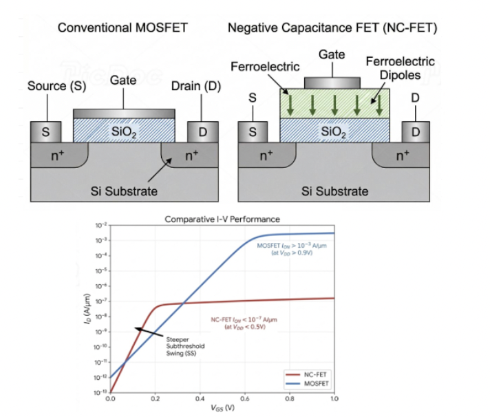
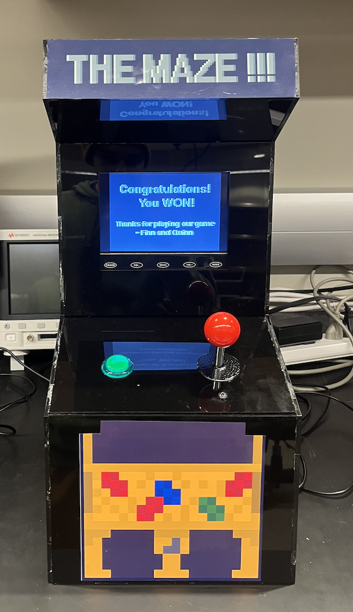
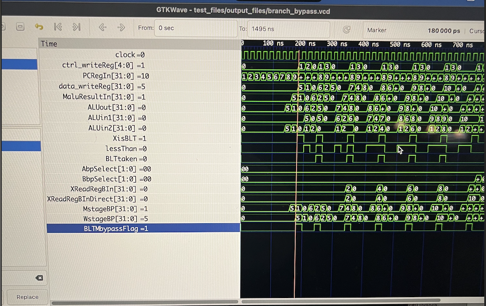
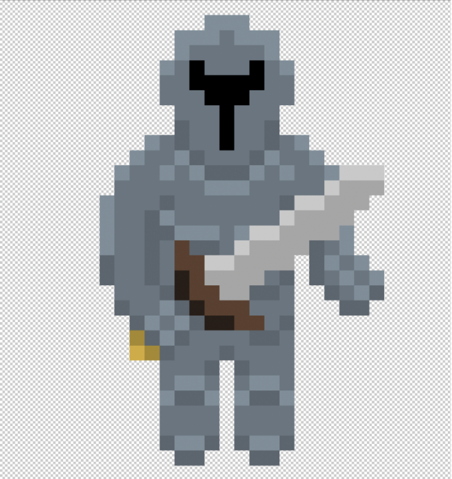

Semiconductors · Emerging Devices
Performance and Analysis of Negative-Capacitance FETs
A technical research presentation on Negative-Capacitance transistors and their performance compared to established MOS technologies.

Abstract
Negative-capacitance field-effect transistors (NC-FETs) offer a potential path to lower-power computing by introducing a ferroelectric layer into the transistor gate stack. This layer can amplify the internal gate voltage, enabling subthreshold swings below the conventional room-temperature limit of 60 mV/decade. Steeper switching could reduce the supply voltage required for logic operation, addressing a major constraint in conventional CMOS scaling.
We reviewed device operating principles and benchmarked published experimental results and simulations across planar, FinFET, gate-all-around, and two-dimensional channel architectures. Comparisons focused on subthreshold swing, operating voltage, on/off current ratio, and remanent polarization. The analysis examined why exceptionally low subthreshold swing alone does not establish practical superiority: some demonstrations require high operating voltages or sacrifice drive current and stability.
HfO₂-based ferroelectrics offer a promising route toward CMOS integration, but practical adoption depends on managing hysteresis, finite polarization switching times, and fabrication variability. Our report and presentation assess these limitations alongside the performance gains, emphasizing the importance of capacitance matching and distinguishing simulated potential from experimentally demonstrated capabilities.
Research Focus
Switching
Can negative capacitance FETs beat the ~50 mV/dec Bolztman Barrier enabling faster switching speeds?
Benchmarking
How do structure, ferroelectric material, switching behavior, and operating conditions compare to existing technologies?
Tradeoffs
How do various properties and benchmarks influence NC Fets usability in CMOS circuits?
Feasibility
What blocks adoption over conventional FinFET and gate-all-around (GAA) logic?
Results
The complete system consists of a custom CPU deployed to an FPGA connected to a VGA controller and pull-down input circuitry with game logic written in assembly. After pushing the start button but before the maze loads, a custom 8x8 maze is created and stored in RAM using a depth-first search backtrace algorithm paired with a pseudo random number generating XOR shifting function to find the longest path between the start and end tiles. Players use the joystick to navigate the maze by existing one tile into another tile where a valid exit/entry point exists. Custom map backgrounds are displayed to match the corresponding tiles for players to see where valid exits exist while contributing to the dungeon-crawler theme. When a player arrives at an end tile, there are no valid exists except for the entry point, and a tresure chest appears in the middle of the tile. By navigating the sprite over the treasure chest, players win the game and the VGA transitions to the next game state-the end screen-where players can choose to play the maze again with a different path by pushing the button on the arcade cabinet.

Photo Gallery

